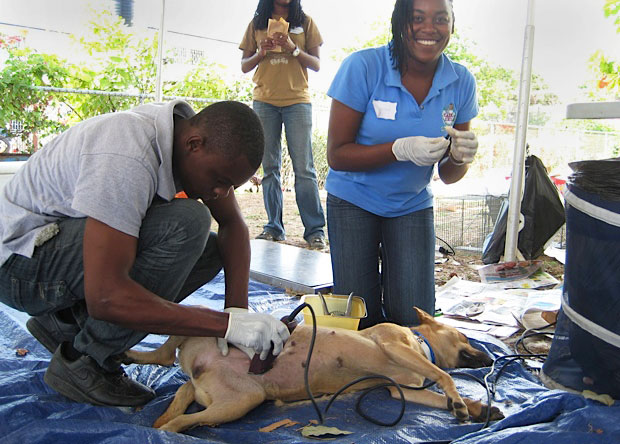

Volunteer
International Spay/Neuter Network (ISNN) is run completely by volunteers, and we are always looking for people willing to give their time to help our cause. If any of the following volunteer opportunities interest you, or if you have a special skill you think might be helpful, please contact us.

Veterinary Professionals
If you are a veterinarian or technician with experience in high-volume spay/neuter, we want you! We need people who are willing to travel to Jamaica and work at our 3-day Community Spay/Neuter Clinics or help with our Cat Cafe Program. If you can also teach high-volume techniques to others, even better!
Humane Educators
Do you enjoy working with children? We need people to help at our Community Spay/Neuter Clinics, teaching children about caring for pets and compassion towards animals. We are also looking for volunteers to help bring our Humane Education Program into schools.
Cat Cafe Program
We would like to expand our Cat Cafe Program, and need people to help us promote the program. We also need someone to help with planning and organizing spay/neuter clinics at participating hotels. If you could assist with either or both of these, we would love to have you!
Fundraising Assistance
We are looking for people, with or without fundraising experience, to help us raise money! If you’ve been involved in fundraising before, or if you just have some great ideas, please contact us.